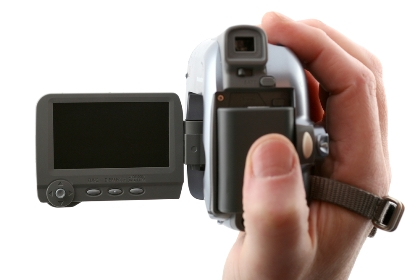

Услуги частного детектива:
- Розыск людей и движимого имущества
- Розыск животных
- Вооруженная охрана
- Наблюдение и слежка
- Проверка жён, мужей
- Предсвадебная проверка
- Услуги адвоката по уголовным делам
- Услуги адвоката по административным делам
- Круглосуточный выезд адвоката, юриста
- Оказание юридической помощи
- Предоставление информации
- Расследование угроз
- Поиск, проверка персонала
- Розыск имущества должника
- Помощь в решении проблем (долги, семейные проблемы)
- Кардинальные методы в лечении наркомании
- Помощь адвокатам
- Консультации по уголовным и административным делам
- Охранные системы
- Сопровождение сделок, проверка фирм (ООО, ПАО, ИП), сведения о партнёрах
- Регистрация, ликвидация ООО, ИП
- Бухгалтер, бухгалтерское сопровождение фирм
Кто владеет информацией, тот владеет миром!
Скрытое видеонаблюдение

В нашей стране частная жизнь гражданина защищена статьями № 137, № 138 и № 138.1 УК РФ, которые запрещают распространять сведения о его частной жизни без его согласия, а также охраняют тайну телефонных переговоров, переписки и т. д.
В дополнение к этому российскими законами запрещено как покупать, так и изготавливать самостоятельно спецсредства, которые могут предназначаться для получения аудио- и видеоинформации о жизни субъекта без согласия оного.
Поэтому следует быть осторожным, заказывая товары из-за границы по интернету, что сейчас особенно популярно в России. Незнание закона не освобождает от ответственности и заказав камеру, встроенную, к примеру, в очки или ручку, даже без всякого злого умысла, можно нарваться на немалые проблемы с законом: от внушительного штрафа до лишения свободы до четырех лет.
Видеонаблюдение в общественных местах и офисах не считается скрытым, поскольку гражданам известно о существовании камер. В первом случае расположение дорожных камер и прочих камер можно узнать в интернете. Во втором случае сотрудник предупреждается о существовании видеонаблюдения при подписании договора. Если в договоре этот пункт не оговорен, а видеонаблюдение присутствует, можно смело подавать на работодателя в суд.
Вести скрытое видеонаблюдение с последующим предоставлением видеоматериалов в случае необходимости в суд в качестве доказательства в России имеют право только правоохранительные органы, а также частные лица, которые занимаются оперативно-розыскными работами и имеющие соответствующую лицензию – т. е. частные детективные агентства.
Однако при этом законность видеонаблюдения должна подтверждаться для каждого конкретного случая, поскольку российская конституция, а точнее, статья № 23 гарантирует право на неприкосновенность личной жизни и распространение сведений о ней без ведома гражданина. Таким образом, даже действия правоохранительных органов и частных агентств попадают под статью № 137 УК РФ, грозящую штрафом и сроком лишения свободы до четырех лет. И именно это противоречие в законах оставляет лишь небольшую лазейку для допустимого оперативного вмешательства в личную жизнь для каждого конкретного случая, а среди законников до сих пор ведутся жаркие споры.
Так или иначе, если вам понадобилось скрытое видеонаблюдение, чтобы убедиться в верности своей половины или в честности делового партнера, не следует делать это самому во избежание проблем с законом. Обратитесь в частное детективное агентство, которое имеет право установить видеонаблюдение без дальнейшего распространения, для того, чтобы убедиться или опровергнуть свои подозрения. Что касается моральных аспектов – это личное дело каждого гражданина, однако все законодательные требования должны быть максимально соблюдены на уровне правовых актов.